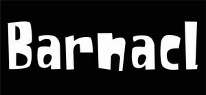

Trade Mark Journal No.2025/039 26 September 2025
UK00004264704 16 September 2025 (18,21)

- Class 18
- Backpacks; Backpacks [rucksacks]; Duffel bags; Duffle bags; Baby backpacks; School backpacks; Carry-all bags; Backpacks for carrying infants; Carry-on bags; Tote bags; Carrying bags; Cross-body bags; Small backpacks; Camping bags; Hiking rucksacks; Wrist mounted carryall bags; Rucksacks; Drawstring bags; Sling bags; Luggage bags; Crossbody bags; Baby carrying bags; Waterproof bags; All-purpose carrying bags; Daypacks; Belt bags and hip bags; Shoe bags for travel; Toiletry bags; Bags for school; School bags; Traveling bags; Schoolbags; Bags for clothes; Belt bags; Travel bags; Bags for travel; Bags; Schoolchildren's backpacks; Umbrella bags; Drawstring pouches; Shoulder bags; Travelling bags; Shoe bags; Souvenir bags; Bucket bags; School knapsacks; Garment bags for travel; Bags (Garment -) for travel; Trunks and traveling bags; Waist bags; Wheeled bags; Canvas bags; Kit bags; Small rucksacks; Attaché bags; Suit bags; Trunks and travelling bags; Messenger bags; Tool bags of leather, empty; School book bags; Luggage, bags, wallets and other carriers; Knapsacks; Satchels (School -); School satchels; Bags for sports clothing; Travel luggage.
- Class 21
- Bottles; Glass bottles; Plastic bottles; Water bottles; Drinking bottles; Glass stoppers for bottles; Reusable bottles; Plastic water bottles; Biodegradable bottles; Insulated bottles [flasks]; Refrigerating bottles; Bottles (Refrigerating -); Plastic water bottles [empty]; Water bottles for bicycles; Biobased bottles; Empty water bottles for bicycles; Water bottles sold empty; Vacuum bottles; Aluminum water bottles; Reusable plastic water bottles sold empty; Water bottles for bicycles, sold empty; Covers for water bottles; Aluminum water bottles, empty; Bottles, sold empty; Stands for bottles; Sports bottles [empty]; Squeeze bottles, empty; Shaker bottles sold empty; Drinking bottles for sports; Siphon bottles for carbonated water; Vacuum bottles [insulated flasks]; Glass flasks [containers]; Sports bottles sold empty; Jars (Glass -) [carboys]; Reusable stainless steel water bottles sold empty; Siphon bottles for aerated water; Drinks containers; Reusable stainless steel water bottles; Insulated vacuum bottles; Glass jars; Glass containers; Heaters for feeding bottles, non-electric; Feeding bottles (Heaters for -), non-electric.
JOYLIOUS WONDER LIMITED
Representative: Courtney Smith Solicitors LLP